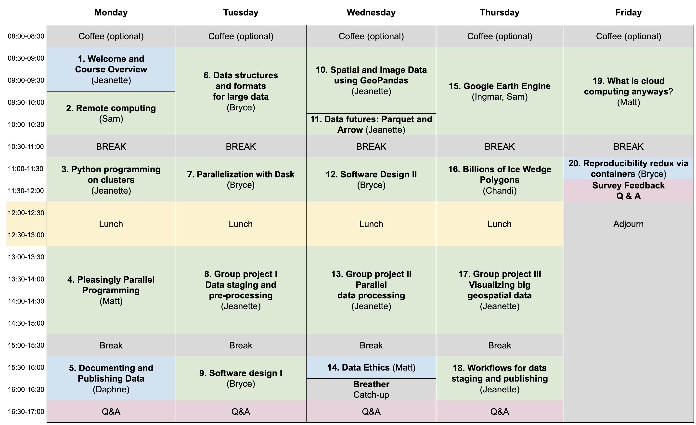

Scalable and Computationally Reproducible Approaches to Arctic Research
Preface
About
This 5-day in-person workshop will provide researchers with an introduction to advanced topics in computationally reproducible research in python and R, including software and techniques for working with very large datasets. This includes working in cloud computing environments, docker containers, and parallel processing using tools like parsl and dask. The workshop will also cover concrete methods for documenting and uploading data to the Arctic Data Center, advanced approaches to tracking data provenance, responsible research and data management practices including data sovereignty and the CARE principles, and ethical concerns with data-intensive modeling and analysis.

Schedule

Code of Conduct
Please note that by participating in this activity you agree to abide by the NCEAS Code of Conduct.
Setting Up
In this course, we will be using Python (> 3.0) as our primary language, and VS Code as our IDE. Below are instructions on how to get VS Code set up to work for the course. If you are already a regular Python user, you may already have another IDE set up. We strongly encourage you to set up VS Code with us, because we will use your local VS Code instance to write and execute code on one of the NCEAS servers.
Download VS Code and Extensions
First, download VS Code if you do not already have it installed.
Check to make sure you have Python installed if you aren’t sure you do. To do this, from the terminal run:
python3 --versionIf you get an error, it means you need to install Python. Here are instructions for getting installed, depending on your operating system. Note: There are many ways to install and manage your Python installations, and advantages and drawbacks to each. If you are unsure about how to proceed, feel free to reach out to the instructor team for guidance.
- Windows: Download and run an installer from Python.org.
- Mac: Install using homebrew. If you don’t have homebrew installed, follow the instructions from their webpage.
brew install python3
After you run your install, make sure you check that the install is on your system PATH by running python3 --version again.
Set up VS Code
This section summarizes the official VS Code tutorial. For more detailed instructions and screenshots, see the source material
First, install the Python extension for VS Code.
Open a terminal window in VS Code from the Terminal drop down in the main window. Run the following commands to initialize a project workspace in a directory called training. This example will show you how to do this locally. Later, we will show you how to set it up on the remote server with only one additional step.
mkdir training
cd training
code .Next, we will select the Python interpreter for the project. Open the Command Palette using Command + Shift + P (Control + Shift + P for windows). The Command Palette is a handy tool in VS Code that allows you to quickly find commands to VS Code, like editor commands, file edit and open commands, settings, etc. In the Command Palette, type “Python: Select Interpreter.” Push return to select the command, and then select the interpreter you want to use (your Python 3.X installation).
Finally, download the Jupyter extension. You can create a test Jupyter Notebook document from the command pallete by typing “Create: New Jupyter Notebook” and selecting the command. This will open up a code editor pane with a notebook that you can test.
Test your local setup (Optional)
To make sure you can write and execute code in your project, create a Hello World test file.
- From the File Explorer toolbar, or using the terminal, create a file called
hello.py - Add some test code to the file, and save
msg = "Hello World"
print(msg)- Execute the script using either the Play button in the upper-right hand side of your window, or by running
python3 hello.pyin the terminal.- For more ways to run code in VS Code, see the tutorial
About this book
These written materials reflect the continuous development of learning materials at the Arctic Data Center and NCEAS to support individuals to understand, adopt, and apply ethical open science practices. In bringing these materials together we recognize that many individuals have contributed to their development. The primary authors are listed alphabetically in the citation below, with additional contributors recognized for their role in developing previous iterations of these or similar materials.
This work is licensed under a Creative Commons Attribution 4.0 International License.
Citation: Matthew B. Jones, Bryce Mecum, S. Jeanette Clark, Samantha Csik. 2022. Scalable and Computationally Reproducible Approaches to Arctic Research.
Additional contributors: Amber E. Budden, Natasha Haycock-Chavez, Noor Johnson, Stephanie Hampton, Jim Regetz, Bryce Mecum, Julien Brun, Julie Lowndes, Erin McLean, Andrew Barrett, David LeBauer, Jessica Guo.
This is a Quarto book. To learn more about Quarto books visit https://quarto.org/docs/books.